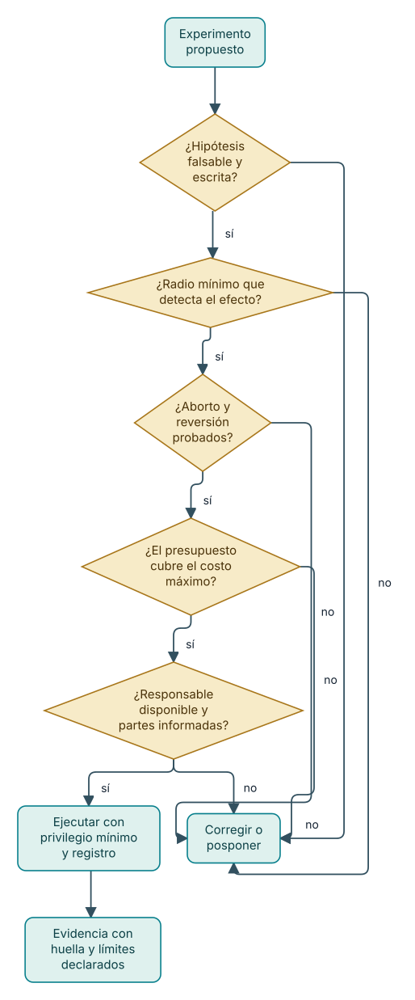
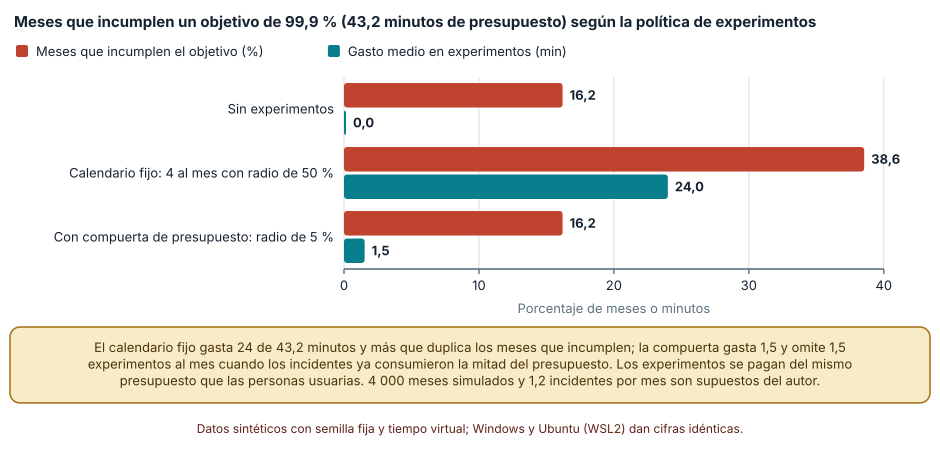
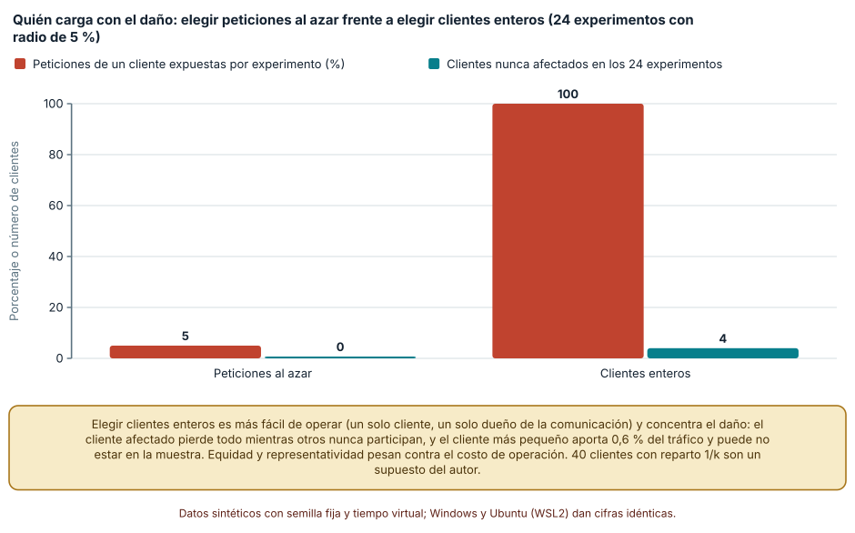
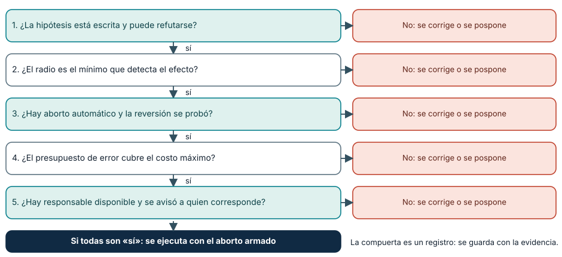

← SE-512 — Caos continuo: automatización en CI/CD y en producción · ↑ Parte 42 · 📚 Índice completo · 🌐 Portal · SE-514 — Aprender de los experimentos: hallazgos, métricas y mejora →
Punto profesional y fundamento pedagógico
Punto profesional. La clase existe para que establezcas los límites de la práctica: cuánto daño puede pagar el presupuesto de error, quién carga con él, qué privilegios se conceden a la herramienta que inyecta, cuándo un experimento no debe hacerse y qué no puede demostrar la ingeniería del caos. La disciplina tiene una paradoja ética: para reducir el daño de los incidentes provoca daño controlado, y la diferencia entre ambos depende de decisiones de diseño sobre radio, equidad, permisos y calendario.
Por qué aparece aquí. Sigue a SE-512: allí el caos entró al pipeline y a la producción continua; aquí se pregunta qué le da derecho a un equipo a ejecutar un experimento, quién lo autoriza, con qué permisos y cómo queda registrado. Usa el presupuesto de error de la Parte 41 (SE-497), el radio y el aborto de SE-506 y el experimento acotado de SE-515. El caso conductor es el programa de experimentos de la API de entregas.
Error conceptual que debe corregir. Creer que «es un experimento controlado» basta como justificación. Un experimento tiene personas afectadas, un costo en presupuesto, privilegios que se pueden abusar y una conclusión limitada; un programa que no declara esas cuatro cosas es un riesgo con buena prensa.
Secuencia de aprendizaje. Antes de ver los resultados predices cuántos meses incumplen su objetivo con un calendario fijo de experimentos y con una compuerta de presupuesto, y qué le ocurre al cliente más pequeño cuando se elige por cliente en lugar de por petición. Después contrastas la predicción con dos experimentos y escribes la compuerta de decisión de tu equipo. ICAP distingue participación de construcción de conocimiento; How People Learn II respalda diseñar la práctica con contextos reales y retroalimentación.
Evidencia de aprendizaje. limites-log.md con la predicción, las tres figuras reproducidas, la compuerta de decisión de tu programa (cinco preguntas y sus evidencias), una política de permisos para la herramienta de inyección y una lista de lo que tus experimentos no pueden demostrar.
Límite de la conclusión. Los incidentes, los experimentos, los 40 clientes y sus cuotas son sintéticos, con semilla fija. No se dañó ninguna petición real; las cifras muestran un mecanismo de costos y de equidad, y la clase no sustituye una evaluación ética ni legal de tu organización.
Trazabilidad fuente → afirmación
| Fuente primaria u oficial | Afirmación que respalda | Lo que no prueba |
|---|---|---|
| Principles of Chaos Engineering | Establece que experimentar en producción puede causar un dolor innecesario a las personas usuarias y que es responsabilidad y obligación de quien hace caos asegurar que las consecuencias se minimizan y contienen. | No dice cuánto daño es aceptable. |
| ACM Code of Ethics and Professional Conduct | Pide evitar el daño, define el daño como consecuencia negativa significativa e injusta y establece que, cuando acciones bienintencionadas causan un daño no intencionado, quienes son responsables están obligados a deshacerlo o mitigarlo en la medida de lo posible. | No resuelve un dilema concreto. |
| Google SRE: Embracing Risk | Presenta el presupuesto de error como una forma de decidir cuánto riesgo asumir y cómo gastarlo. | No fija el presupuesto de tu servicio. |
| AWS FIS: qué es | Advierte que el servicio realiza acciones reales sobre recursos reales y recomienda planificar y ensayar antes en preproducción. | No describe sus permisos. |
| Chaos Mesh: por qué el demonio corre en modo privilegiado | Su documentación incluye una página sobre por qué el demonio del caos corre con privilegios elevados, y otra sobre la gestión de permisos de usuario. | No evalúa su seguridad. |
Antes de empezar
Recupera lo aprendido en SE-506 y SE-512: un experimento tiene radio, aborto y reversión, y puede automatizarse. La pregunta activa es: si mañana quisieras ejecutar un experimento de caos que va a fallar a 2 % de las entregas de estudiantes durante 10 minutos, ¿quién decide que se puede, con qué evidencia y a quién le tocaría ese 2 %?
Prerrequisitos
- Haber completado
SE-506ySE-512o poder escribir un experimento con radio, aborto y precondiciones. - Conocer el presupuesto de error y los acuerdos de nivel de servicio (
SE-497). - Python 3.11 o posterior; los experimentos usan solo la biblioteca estándar.
Problema auténtico
Un equipo entusiasta programa cuatro experimentos al mes con 50 % del tráfico durante 20 minutos, en el calendario compartido, sin consultar a nadie, con una cuenta de administrador del clúster para la herramienta. En tres meses se dan tres situaciones: el presupuesto de error del trimestre se agota en las primeras seis semanas; una universidad pequeña (0,6 % del tráfico) fue elegida cuatro veces por la regla «por cliente» y sufrió falla total en esos experimentos, sin aviso; y alguien con acceso a la herramienta la usa por error contra el entorno equivocado un viernes. Nada de eso viola una afirmación del equipo («hacemos experimentos controlados»); violan lo que ninguna afirmación decía.
Objetivos observables
Al terminar podrás:
- calcular el costo de un programa de experimentos en minutos equivalentes de caída y compararlo con el presupuesto de error;
- distinguir la selección por petición de la selección por cliente y medir quién carga con el daño;
- definir una política de privilegios para la herramienta de inyección (mínimo alcance, separación de funciones, registro, interruptor general);
- escribir una compuerta de decisión con las condiciones que detienen un experimento antes de empezarlo;
- enumerar lo que la ingeniería del caos no puede demostrar y cuándo no debe usarse.
Mapa conceptual

El mapa muestra que la compuerta se evalúa antes de la ejecución y que un solo «no» detiene el experimento. El privilegio mínimo y el registro son parte de la ejecución, no un trámite posterior.
Temas y por qué importan
| Tema | Por qué cambia una decisión profesional | Evidencia mínima |
|---|---|---|
| Presupuesto de error de los experimentos | Los experimentos se pagan del mismo presupuesto que las personas usuarias. | Predicción, traza causal y contraejemplo de Presupuesto de error de los experimentos en limites-log.md |
| Equidad: a quién le toca | Elegir por cliente concentra el daño. | Predicción, traza causal y contraejemplo de Equidad: a quién le toca en limites-log.md |
| Privilegios de la herramienta | La puerta que inyecta fallas también puede abusarse. | Predicción, traza causal y contraejemplo de Privilegios de la herramienta en limites-log.md |
| Cuándo no hacerlo | Sin observabilidad, aborto o responsables, el experimento es un incidente. | Predicción, traza causal y contraejemplo de Cuándo no hacerlo en limites-log.md |
| Límites de lo demostrable | Una confirmación vale solo para lo probado. | Predicción, traza causal y contraejemplo de Límites de lo demostrable en limites-log.md |
Conceptos y decisiones
1. El presupuesto de error pagado por los experimentos
El libro de SRE presenta el presupuesto de error como la diferencia entre el objetivo y el 100 %, que se puede gastar en cambios, despliegues y riesgos asumidos. Un objetivo de 99,9 % mensual deja 43,2 minutos de caída total equivalente. Los experimentos consumen de esa cuenta: un experimento con fracción f, duración d minutos y daño h sobre las peticiones afectadas cuesta f · d · h minutos equivalentes. Con radio de 50 %, 20 minutos y 60 % de daño, son 6 minutos; cuatro al mes son 24, más de la mitad del presupuesto. Con radio de 5 %, son 0,6 minutos y cuatro al mes, 2,4.
Se simulan 4 000 meses con incidentes (1,2 por mes, duración lognormal con mediana de 12 minutos) y tres políticas: sin experimentos; un calendario fijo de cuatro al mes con radio de 50 %; y una compuerta que ejecuta cuatro experimentos con radio de 5 % pero omite el siguiente si, tras los incidentes del mes, queda menos de la mitad del presupuesto. Las tres usan los mismos incidentes.
costo = radio * 20.0 * 0.6 # minutos equivalentes de caída total por experimento
if politica == "compuerta" and (presupuesto - incidentes - gastado) < 0.5 * presupuesto:
omitidos += 1; continue # la compuerta omite el experimento
Cómo leer la figura. Cada grupo es una política; la barra coral, el porcentaje de meses en que los incidentes y los experimentos juntos superan los 43,2 minutos; la verde, los minutos medios gastados en experimentos. Sin experimentos, 16,2 % de los meses incumple por los incidentes. Con calendario fijo, el gasto de 24 minutos lleva el incumplimiento a 38,6 %, más del doble. Con la compuerta, el gasto es de 1,5 minutos, omite 1,5 experimentos al mes y deja el incumplimiento en 16,2 %: los experimentos no añaden ningún incumplimiento a los 4 000 meses simulados. Dónde deja de valer: el costo asume que el daño es proporcional al radio y a la duración, y que los incidentes son independientes de los experimentos; un experimento que provoca un incidente más largo (una cascada, SE-507) cuesta mucho más que su cálculo. La compuerta tampoco ve el daño a un cliente concreto, que es el tema de la sección siguiente.
2. Equidad: a quién le toca
El radio de 5 % se puede cumplir de dos maneras muy distintas. Por petición, cada petición se elige con probabilidad de 5 %: todas las personas tienen la misma probabilidad y el daño a cada cliente es 5 % de sus peticiones. Por cliente, se eligen clientes enteros hasta sumar 5 % del tráfico: es más fácil de operar (una sola institución, una sola comunicación) pero el cliente elegido sufre 100 % de sus peticiones. Se simulan 24 experimentos con 40 clientes de tráfico 1/k (el mayor aporta 23,4 % y el menor 0,6 %), con elección al azar de clientes hasta alcanzar el radio.

Cómo leer la figura. La primera pareja de barras es la elección por petición: la fracción de las peticiones de un cliente expuesta en un experimento es 5 %, para todos, y no queda ningún cliente sin participar. La segunda es la elección por cliente: el cliente afectado pierde 100 % de sus peticiones en ese experimento, 36 de los 40 clientes son elegidos al menos una vez y 4 nunca; el que más veces fue elegido lo fue 5 de las 24 veces. Dónde deja de valer: el reparto 1/k y la elección al azar son supuestos; con una regla que evite repetir al mismo cliente o que excluya a los que tienen contratos críticos, el resultado cambia, y por eso la regla se escribe y se revisa. La elección por petición tampoco es neutra: algunas peticiones (las de un estudiante que sube un trabajo grande) cuestan más al ser interrumpidas.
La enseñanza no es «siempre por petición»: es que la selección es una decisión con consecuencias de equidad que se documenta. A veces se justifica elegir por cliente (para que un cliente sepa y consienta, para aislar una falla de datos), y entonces se informa de antemano, se rota con una regla visible y se excluyen los momentos críticos (cierres de plazo, evaluaciones). La ACM pide evitar el daño: define «daño» como consecuencia negativa significativa e injusta, y establece que, cuando acciones bienintencionadas causan un daño no previsto, quienes son responsables están obligados a deshacerlo o mitigarlo en lo posible. Un experimento que cae sobre la misma institución cuatro veces no es injusto por su intención sino por su diseño.
3. Privilegios y seguridad de la herramienta
La herramienta de inyección es, por definición, una puerta con permiso para alterar componentes. AWS lo dice sin eufemismos: realiza acciones reales sobre recursos reales, y por eso recomienda planificar y ensayar antes en preproducción. La documentación de Chaos Mesh incluye una página sobre por qué su demonio corre con privilegios elevados (necesita acceso al nodo para alterar la red, los ficheros o el reloj de un contenedor) y otra sobre la gestión de permisos de usuario. De ahí una política mínima: mínimo alcance (qué espacios de nombres, etiquetas o cuentas puede tocar y ninguno más), separación de funciones (quien aprueba no es quien ejecuta, y el aborto lo puede activar cualquiera), registro (cada experimento deja quién, cuándo, con qué alcance y con qué resultado, con una huella), interruptor general (una orden que detiene todos los experimentos y que no depende de la herramienta) y entornos separados (credenciales distintas para preproducción y producción, de modo que apuntar mal sea difícil). Una herramienta con privilegios de administrador del clúster, sin registro y con una cuenta compartida es adecuada solo para un entorno aislado.
4. Cuándo no hacer un experimento
Hay situaciones en que la respuesta correcta es no. Si no hay observabilidad del grupo experimental, el experimento no puede refutar nada (SE-505). Si el aborto o la reversión no se han probado, el radio no está acotado (SE-506). Si el sistema no está en estado estable, el resultado no es interpretable y se añade daño. Si hay un incidente en curso o un despliegue reciente en los componentes tocados, se mezclan causas. Si el presupuesto de error no cubre el costo máximo con margen, el experimento se paga con la confianza de quienes usan el servicio. Si nadie responde del experimento, o las partes interesadas no fueron informadas, el aprendizaje queda sin dueño. Y si la falla no se puede resistir por diseño (la pérdida de la única copia de un dato), lo que corresponde es corregir el diseño y no probarlo. Los principios lo resumen como la obligación de quien hace caos de minimizar y contener las consecuencias.

Cómo leer la figura. Las cinco preguntas se leen de arriba abajo; cada «no» desvía hacia «se corrige o se pospone» y solo cuando las cinco son «sí» se ejecuta, con el aborto armado. Dónde deja de valer: la lista es una propuesta mínima y no una norma: un sistema con otras obligaciones (sanitario, financiero) añadirá preguntas, y las respuestas «sí» se apoyan en evidencia que alguien puede revisar, no en la afirmación de quien propone el experimento. La compuerta es un registro: se guarda junto a la evidencia del experimento.
5. Lo que la ingeniería del caos no demuestra
Una confirmación solo vale para la falla, la intensidad, el tráfico y el estado probados: «resistió 100 ms de lentitud en 2 % del tráfico un martes» no equivale a «es resiliente». No descubre lo que nadie imaginó, porque solo se prueban las fallas del catálogo; no prueba la capacidad ni el comportamiento ante cargas inéditas si no se inyectaron; no sustituye al diseño (un sistema sin redundancia no se arregla probándolo), ni a la observabilidad, ni a la respuesta a incidentes, ni a la auditoría o la prueba de intrusión. Su valor es producir evidencia acotada y refutable de que ciertas hipótesis resisten, y encontrar debilidades antes de que lo haga un incidente. Declarar sus límites en cada informe es parte del método, y por eso las clases de esta parte terminan con un apartado de lo que no se hizo.
Definiciones de trabajo
- costo de un experimento: minutos equivalentes de caída total que consume del presupuesto de error.
- compuerta de presupuesto: regla que omite un experimento si el presupuesto restante no cubre su costo con margen.
- selección por petición: elegir al azar peticiones individuales para recibir la falla.
- selección por cliente: elegir clientes enteros para recibir la falla.
- privilegio mínimo: permiso limitado a lo imprescindible para la tarea y no más.
- interruptor general: orden independiente de la herramienta que detiene todos los experimentos.
Las definiciones son operativas para la API de entregas. No convierten términos con una historia más amplia en sinónimos y deben contrastarse con las fuentes enlazadas.
Ejemplo mínimo
El fragmento calcula el costo de un experimento y cuántos caben en un presupuesto. Antes de ejecutarlo, predice cuántos experimentos de 5 % de radio, 20 minutos y 60 % de daño caben en 43,2 minutos reservando la mitad para incidentes.
def costo(radio: float, duracion_min: float, dano: float) -> float:
return radio * duracion_min * dano
c = costo(0.05, 20, 0.6)
print(round(c, 2), int(0.5 * 43.2 // c), round(costo(0.5, 20, 0.6), 1))Imprime 0.6 36 6.0. Un experimento cuesta 0,6 minutos y caben 36 en la mitad del presupuesto; con radio de 50 % cada uno cuesta 6 minutos y caben 3. Registra versión de Python, comando y salida; luego repite el cálculo con tu objetivo de nivel de servicio.
Ejemplo profesional
Supón, como caso hipotético y no como medición, que el equipo escribe la política de su programa. Presupuesto: los experimentos nunca consumen más de 10 % del presupuesto mensual y se omiten si queda menos de la mitad. Equidad: selección por petición en producción; por cliente solo con aviso previo y rotación, excluyendo a las instituciones en semana de evaluación. Permisos: la herramienta solo actúa sobre el espacio de nombres de la API de entregas, aprueba el líder y ejecuta la guardia, cualquier persona del equipo puede activar el interruptor general, y hay credenciales separadas para preproducción y producción. Calendario: martes a jueves, de 10:00 a 16:00, fuera de cierres de plazo. Registro: cada experimento deja hipótesis, radio, resultado y huella, y la compuerta se archiva con él. Y un apartado de límites: lo que ningún experimento del programa demuestra.
Práctica guiada
- Predice, por escrito, cuántos meses incumplen con calendario fijo y con compuerta, y cuántas veces es elegido el mismo cliente.
- Ejecuta
python scripts/experiments_part42_b.py e513y compara; anota la mayor diferencia con tu predicción. - Cambia el radio del calendario fijo de 50 % a 10 % y encuentra a partir de qué radio deja de aumentar los meses que incumplen.
- Cambia la regla de elección por cliente a «sin repetir hasta agotar la lista» y mide cuántos clientes quedan sin ser elegidos.
- Escribe la política de permisos de tu herramienta con alcance, separación de funciones, registro e interruptor general.
- Entrega
limites-log.mdy pide a otra persona que identifique la situación en la que tu compuerta aprobaría un experimento que no debería hacerse.
Ejercicios
- Presupuesto: con objetivo de 99,95 % mensual (21,6 minutos), calcula cuántos experimentos de radio 10 %, 15 minutos y 50 % de daño caben reservando 60 % para incidentes.
- Equidad: con 5 clientes de cuotas 50, 25, 15, 8 y 2 %, calcula la fracción de sus peticiones expuesta por cliente con selección por petición de 10 % y con selección por cliente.
- Permisos: una herramienta pide acceso de administrador del clúster a todos los espacios de nombres; escribe tres reducciones de alcance y la prueba que comprueba que no pueden tocar producción desde preproducción.
- Cuándo no: clasifica seis situaciones (incidente abierto, aborto sin probar, presupuesto agotado, cierre de plazo, sin observabilidad del grupo, el sistema sin redundancia) como «posponer», «no hacer» o «corregir el diseño».
Reto verificable
Entrega limites-log.md con la predicción, las dos tablas de resultados reproducidas con las mismas semillas, la política de tu programa (presupuesto, equidad, permisos, calendario y registro), la compuerta de cinco preguntas y una lista de lo que ningún experimento de tu programa demuestra. Se aprueba si otra persona ejecuta el código desde un checkout limpio, obtiene las mismas cifras y encuentra un caso en que tu política dañaría a un grupo sin que la compuerta lo impidiera. No se aprueba por declarar «hacemos experimentos controlados» sin presupuesto ni regla de selección.
Caso conductor
El programa de experimentos de la API de entregas es el caso conductor. Esta clase deja el noveno artefacto: la política y la compuerta del programa. SE-514 aprende de los experimentos con ensayos y hallazgos, SE-515 ejecuta uno acotado con aborto y SE-516 lo integra en un programa con validador, huella y límites. Cambia después un solo dato, la regla de selección, y observa quién carga con el daño.
Preguntas frecuentes
¿Es ético dañar a personas usuarias para probar un sistema?
Es un daño deliberado y acotado a cambio de evitar uno mayor y no controlado, y por eso exige proporcionalidad: radio mínimo, aborto, presupuesto, equidad y transparencia. Hay prácticas que no lo justifican (afectar a quien no puede tolerarlo, como en una evaluación) y por eso la compuerta incluye el calendario y las partes informadas.
¿Hay que avisar a los clientes?
Depende del contrato y del daño. Los experimentos que afectan a una fracción pequeña de peticiones y se compensan con reintentos suelen cubrirse con las condiciones del servicio; los que afectan a clientes concretos o a datos requieren aviso o consentimiento. En todo caso se documenta la decisión y quién la tomó.
¿Quién debe poder abortar?
Cualquier persona del equipo, sin pedir permiso y sin consecuencias. El aborto automático cubre lo previsto y el manual cubre lo imprevisto; si abortar tiene un costo personal, se dejará de hacer.
¿Cuándo es mejor no hacer caos?
Cuando falta observabilidad, aborto, reversión, presupuesto o responsables, y cuando el sistema no resiste la falla por diseño. En esos casos el experimento sustituye a una decisión que debería tomarse antes, y el costo de aprender es mayor que el de corregir.
Fallo controlado y diagnóstico
Reproduce el fallo clásico de la clase: un calendario fijo de experimentos sin compuerta de presupuesto. Aplica cuatro experimentos al mes con radio de 50 % durante 4 000 meses y compara con la compuerta.
Registra síntoma, entrada mínima, hipótesis, observación que descarta cada hipótesis, causa, corrección y prueba de regresión. Síntoma: los meses que incumplen el objetivo pasan de 16 % a 39 % sin que haya más incidentes. Hipótesis rivales: (a) hubo más incidentes; (b) los experimentos provocaron incidentes; (c) los experimentos consumieron el presupuesto. Prueba: descompón el gasto en incidentes y en experimentos; si los incidentes gastaron 21,3 minutos de media y los experimentos 24, la hipótesis (c) explica el aumento de 16,2 % a 38,6 % de meses que incumplen. Conclusión: los experimentos son una partida del presupuesto y deben tratarse como tal. Regresión: añade la compuerta y una prueba que exija que el gasto en experimentos no supere el 10 % del presupuesto y se omita con menos de la mitad restante. No cambies a la vez el radio y la frecuencia.
Errores comunes y cómo corregirlos
| Síntoma | Causa probable | Corrección |
|---|---|---|
| El presupuesto se agota por experimentos | Calendario fijo sin compuerta | Compuerta con reserva para incidentes |
| Una institución sufre varias veces | Selección por cliente sin regla de rotación | Seleccionar por petición o rotar con regla visible |
| La herramienta se usa contra el entorno equivocado | Credenciales compartidas entre entornos | Credenciales separadas y aprobación aparte |
| Nadie sabe qué se ejecutó | Sin registro | Registro con huella de cada experimento |
| Se confía en el programa como garantía | No se declaran los límites | Apartado de lo que no se demuestra en cada informe |
Entorno y archivos clave
work/SE-513/
├── README.md
├── limites/
│ ├── presupuesto.py
│ ├── equidad.py
│ └── politica.md
├── tests/test_politica.py
└── evidence/limites-log.mdEl README declara plataforma, versión de Python, semillas y comandos. Los experimentos usan solo la biblioteca estándar y se ejecutaron con CPython 3.12.9 en Windows 11 y 3.12.3 en Ubuntu bajo WSL2 con resultados idénticos. Para recuperar el estado, borra work/SE-513/ y vuelve a ejecutar los scripts. Si añades una dependencia, fija procedencia y versión.
Seguridad, ética y accesibilidad
- cada experimento afecta a personas que no lo pidieron: se justifica por proporcionalidad, se informa y se compensa cuando corresponde;
- no ejecutes experimentos en momentos críticos para las personas (evaluaciones, cierres de plazo) ni sobre quienes no pueden tolerar la falla;
- el registro de experimentos no debe contener datos personales y se conserva con los controles de acceso del resto de la evidencia;
- documenta las tablas y las figuras con texto alternativo y en un formato que un lector de pantalla pueda recorrer;
- respeta las licencias de los libros y artículos y atribuye lo adaptado.
Puente hacia el trabajo con agentes
Un agente al que se le pide «ejecuta experimentos de caos cada semana» tenderá a programarlos con un calendario fijo, a pedir permisos amplios y a elegir objetivos por comodidad. Pídele en cambio que calcule el costo de cada experimento contra el presupuesto, que aplique la compuerta de cinco preguntas, que use credenciales del entorno acordado y que registre cada ejecución con huella. Revisa especialmente si pide privilegios de administrador, si selecciona clientes sin regla y si ejecuta en horario o entorno no autorizado. Un agente nunca debe tener la facultad de aprobar y ejecutar a la vez.
Transferencia
Traslada el análisis a otro equipo (el de pagos, el de búsqueda): calcula el costo de su programa contra su presupuesto, escribe su regla de selección y su política de permisos, y lista lo que no demuestra. La transferencia está lograda cuando puedes decir a quién le tocaría el daño y qué permiso sería el más peligroso, no cuando la política existe.
Evaluación y evidencia
| Criterio | Evidencia para aprobar |
|---|---|
| comprensión | explicación del costo, la equidad, los privilegios y los límites del método |
| corrección | presupuesto y equidad reproducibles con las mismas semillas |
| diseño | política con presupuesto, selección, permisos, calendario y registro |
| diagnóstico | reproducción del fallo «calendario fijo sin compuerta» con regresión |
| incertidumbre | declaración de que los incidentes, los clientes y los costos son sintéticos |
| reproducibilidad | versiones, comandos, salida y límites declarados |
Fuentes
- Principles of Chaos Engineering — responsabilidad de minimizar y contener el daño; autoridad: documento vivo de la comunidad de ingeniería del caos.
- ACM Code of Ethics and Professional Conduct — evitar el daño y mitigarlo; autoridad: Association for Computing Machinery.
- Google SRE: Embracing Risk — presupuesto de error; autoridad: libro de ingeniería de confiabilidad de Google.
- AWS Fault Injection Service — acciones reales sobre recursos reales; autoridad: documentación de Amazon Web Services.
- Chaos Mesh — privilegios del demonio y gestión de permisos; autoridad: documentación del proyecto Chaos Mesh.
Cada fuente respalda el mecanismo indicado; ninguna demuestra que 38,6 % de meses incumplidos, 24 minutos de gasto o cuatro veces el mismo cliente se observen en un equipo real. Esa afirmación depende del presupuesto, de la regla de selección y de los incidentes.
Límites y siguiente paso
Se ejecutaron dos experimentos con semilla fija en Windows y Ubuntu (WSL2) con resultados idénticos. No se dañó ninguna petición real; los incidentes de 1,2 por mes, la duración lognormal, el costo proporcional al radio, los 40 clientes con cuota 1/k y las políticas son construcciones del autor, y la clase no sustituye una evaluación ética, legal ni de seguridad de tu organización. La siguiente clase pregunta qué se aprende de un experimento: cuántos ensayos sostienen una conclusión y cómo se clasifican los hallazgos.
Glosario
- costo de un experimento: minutos equivalentes de caída total que consume del presupuesto de error.
- compuerta de presupuesto: regla que omite un experimento si el presupuesto restante no cubre su costo con margen.
- selección por petición: elegir al azar peticiones individuales para recibir la falla.
- selección por cliente: elegir clientes enteros para recibir la falla.
- privilegio mínimo: permiso limitado a lo imprescindible para la tarea.
- interruptor general: orden independiente de la herramienta que detiene todos los experimentos.
← SE-512 — Caos continuo: automatización en CI/CD y en producción · ↑ Parte 42 · 📚 Índice completo · 🌐 Portal · SE-514 — Aprender de los experimentos: hallazgos, métricas y mejora →